Infrastructure
UNIVERSITY SELANGOR
University Selangor or University of Selangor (abbreviation: UNISEL) (new name effective from 14 February 2011) formerly known as "Universiti Industri Selangor" was established in 1999, this university has two campuses - the main campus is located in Bestari Jaya (formerly known as Batang Berjuntai) (completed in 2005) and a branch/satellite campus located in Shah Alam. UNISEL's latest Chancellor is Raja Tan Sri Arshad Raja Tun Uda, he was also the Pro-Chancellor of UNISEL. UNISEL is a university fully owned by the Selangor state government and the first to be established in Selangor and Malaysia.


PERPUSTAKAAN AWAM SELANGOR (PPAS) BESTARI JAYA
Perpustakaan Awam Selangor (PPAS) Bestari Jaya located at No 31A Jalan Berjuntai 3, Pusat Perniagaan Batang Berjuntai. With their hashtag #StayCalmKeepReading #StayHomeStaySafe #SelangorMembaca #booksfly2u #aktivitionline. This library open for public especially students from primary and secondary schools. Visit Their Official Facebook page!


FIRE STATION AND POLICE STATION
The Fire Station and Police Station serve crucial roles in ensuring public safety and emergency response for the community at Bestati Jaya.
 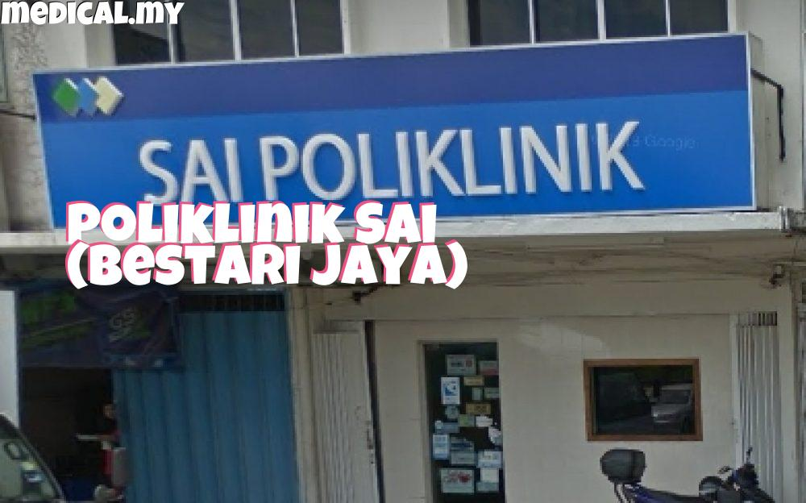
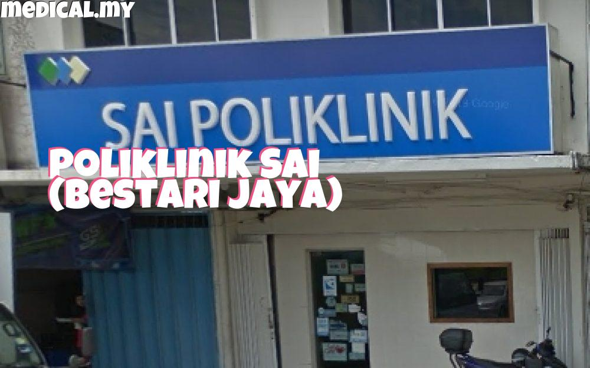
KLINIK BESTARI JAYA
Many clinics were built to make it easier for the community around Bestari Jaya town to do health checkups and treatment. For example, Klinik Kesihatan Bestari Jaya (Government), Sai Poliklinik, Klinik Mediviron and Klinik Rosli.
 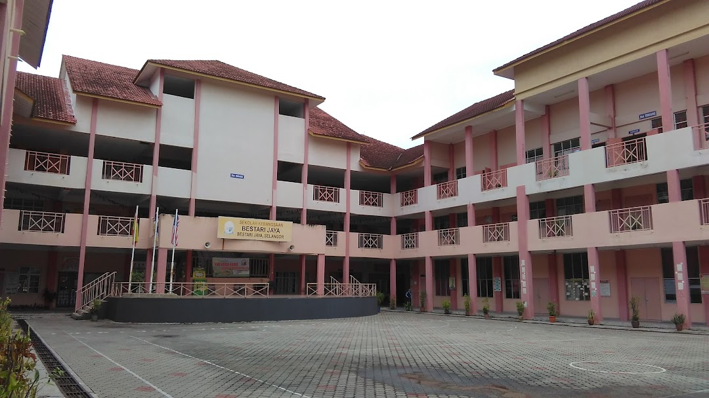
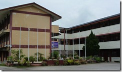 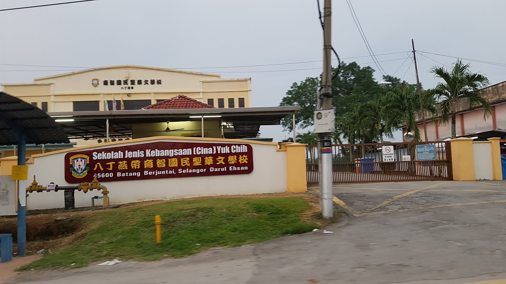
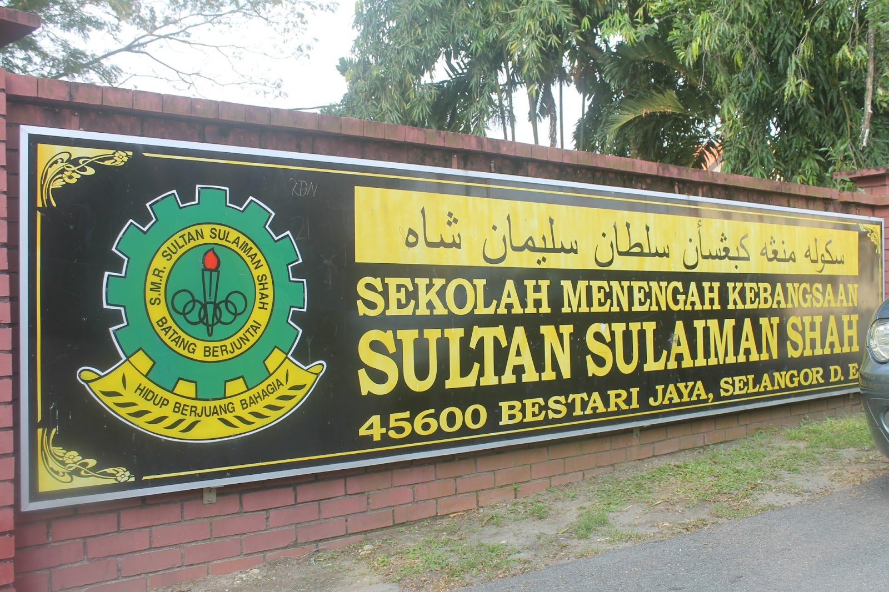 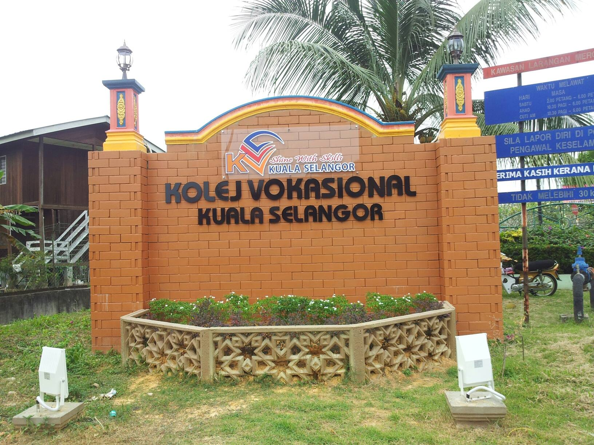
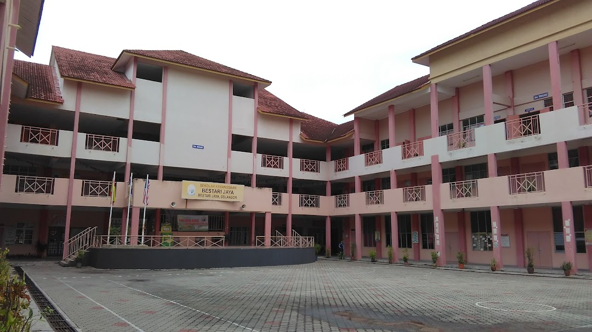
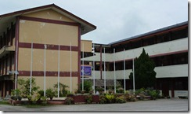 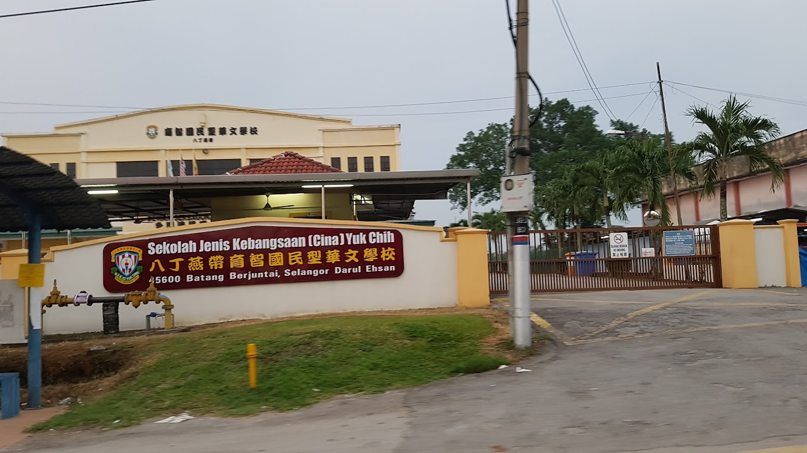
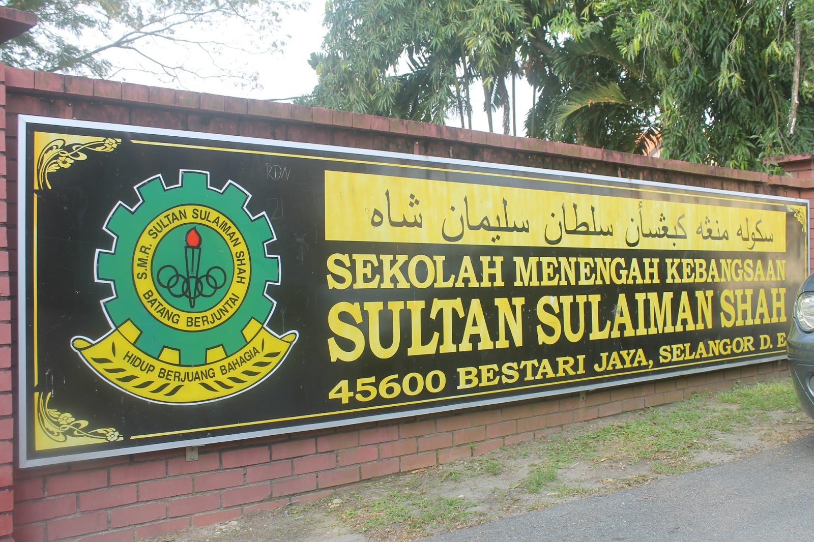 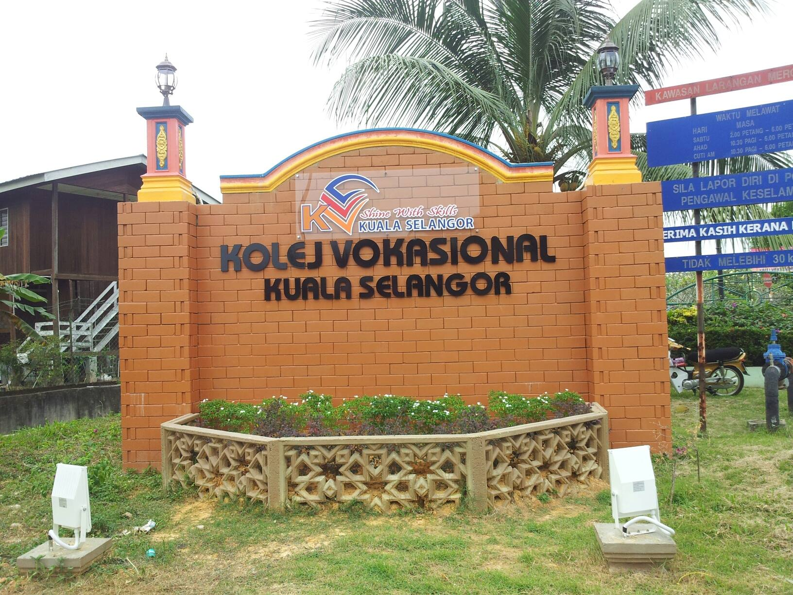
SCHOOLS & KOLEJ VOKASIONAL KUALA SELANGOR
Many schools were built as the community grew day by day. Three Secondary School and Five Primary School. Furthermore, Kolej Vokasional Kuala Selangor located at Pekan Bestari Jaya beside one of the primary school here which is Sekolah Kebangsaan Bestari Jaya (SKBJ)

MOSQUE AND TEMPLE
Firstly, Masjid Al-Awwabin located near the primary school at Pekan Bestari Jaya.Secondly, Dato Gong Temple Bestari Jaya beside the police station. Next, Sri Thandayuthapani Temple,Batang Berjuntai,Selangor. Lastly, Masjid India Bestari Jaya.

PARCELHUB
Parcelhub is a retail business company that specialize in providing courier service and fulfilment center where we provide domestic and international shipping services as well as drop-off services. Since 2016, Parcelhub has pledged to provide quality services to our valuable customers with the ONE-STOP customized packing and shipping solutions.

MOTOCYCLE WORKSHOP
IJOK AUTO MOBILE PARTS SDN. BHD. is located at Pusat Niaga Ijok Permai Bestari Jaya.

BUS STATION
Pekan Bestari Jaya also have a bus station for bus and taxis. However, buses are now less in operation due to less demand and tourists who want to use the bus service here.